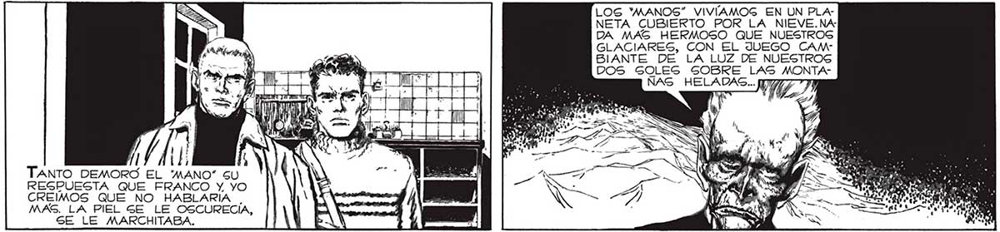
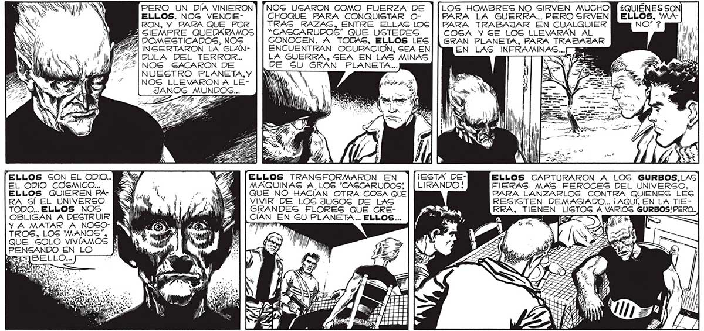

174 LOS "'MANOS” VIVIAMOSG EN UN PLANETA CUBIERTO POR LA NIEVE.NADA MAS HERMOSO QUE NUESTROS GLACIARES, CON EL JUEGO CAM" BIANTE DE LA LUZ DE NUESTROS DOS SGOLEG SOBRE LAS MONTA(e E le MT | ÑAS HELADAS... f > Lola SON a e j o MI AS a AO / r A US TANTO DEMORS EL MANO” SU REGPUESTA QUE FRANCO Y. YO CREIMOS QUE NO HABLARÍIA | MAS. LA PIEL SE LE OSCURECIA, SE LE MARCHITABA. PERO UN DIA VINIERON | [|NOG UGARON COMO FUERZA DE LOS HOMBRES NO SIRVEN MUCHO ELLOS. NOG VENCIE- CHOQUE PARA CONQUISTAR O- PARA LA GUERRA.. PERO SIRVEN ELLOS, WARON, Y PARA QUE _ POR TRAS RAZAS, ENTRE ELLAS LOG| | PARA TRABAJAR EN CUALQUIER NO” 2 A SIEMPRE QUEDARAMOS “CASCARUDOS” QUE USTEDES COGA YGE LOS LLEVARAN AL ¿A DOMESTICADOS, NOS CONOCEN. A TODAS, ELLOS LES GRAN PLANETA, PARA TRABAJAR 2571 NGERTARON LA GLAN- ENCUENTRAN OCUPACION, SEA EN EN LAS INFRAMINAS... Yi GAY DULA DEL TERROR... LA GUERRA, GEA EN LAS MINAS q NOG GACARON DE ¿RE GU GRAN PLANETA... NUESTRO PLANETA,Y : NOS LLEVARON A LEJANOS MUNDOSG... ELLOS SON EL ODIO..MENY ¡ ELLOS TRANSFORMARON EN ]|¡ESTA DEÉ ELLOS CAPTURARON A LOGS GURBOS,LAS EL ODIO CÓSMICO... M e MAQUINAS A, LOS "CASCARUDOS; | | LIRANDO! FIERAS MAS FEROCES DEL UNIVERGO, ELLOS QUIEREN PA- EY... Ll -- NAM [QUE _ NO HACÍAN OTRA COSA QUE PARA LANZARLOS CONTRA QUIENES LEG RA Gl EL UNIVERSO 5 Ml e. 3 Y 01774 VIVIR DE LOG JUGOG DE LAS RESISTEN DEMASIADO... ¡ AQUÍ, EN LA TIETODO... ELLOS NOS Sa a 419 ENANA | GRANDES FLORES QUE CRE- 0 S! PERO. OBLIGAN A DESTRUIR IR O. ll CAN EN GU PLANETA... ELLOS... A | ] Y A MATAR A NOGO- y AAA TE ó Imp ; E TROS, LOS 'MANOS”, QUE GOLO VIVIAMOS RR PENGANDO EN LO SHA SS ÁS AS Si A COM] Rumoa <

